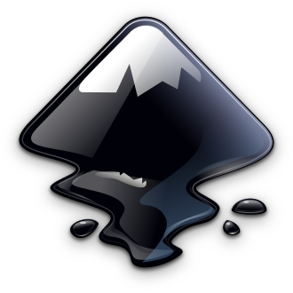
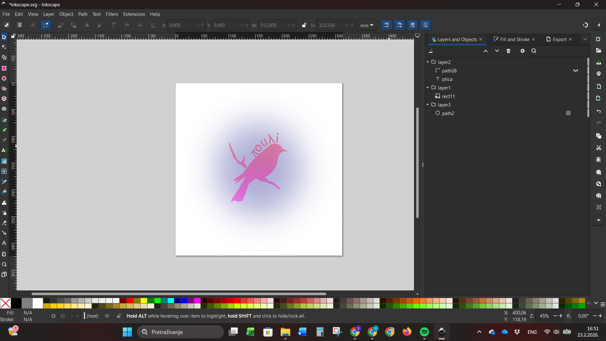
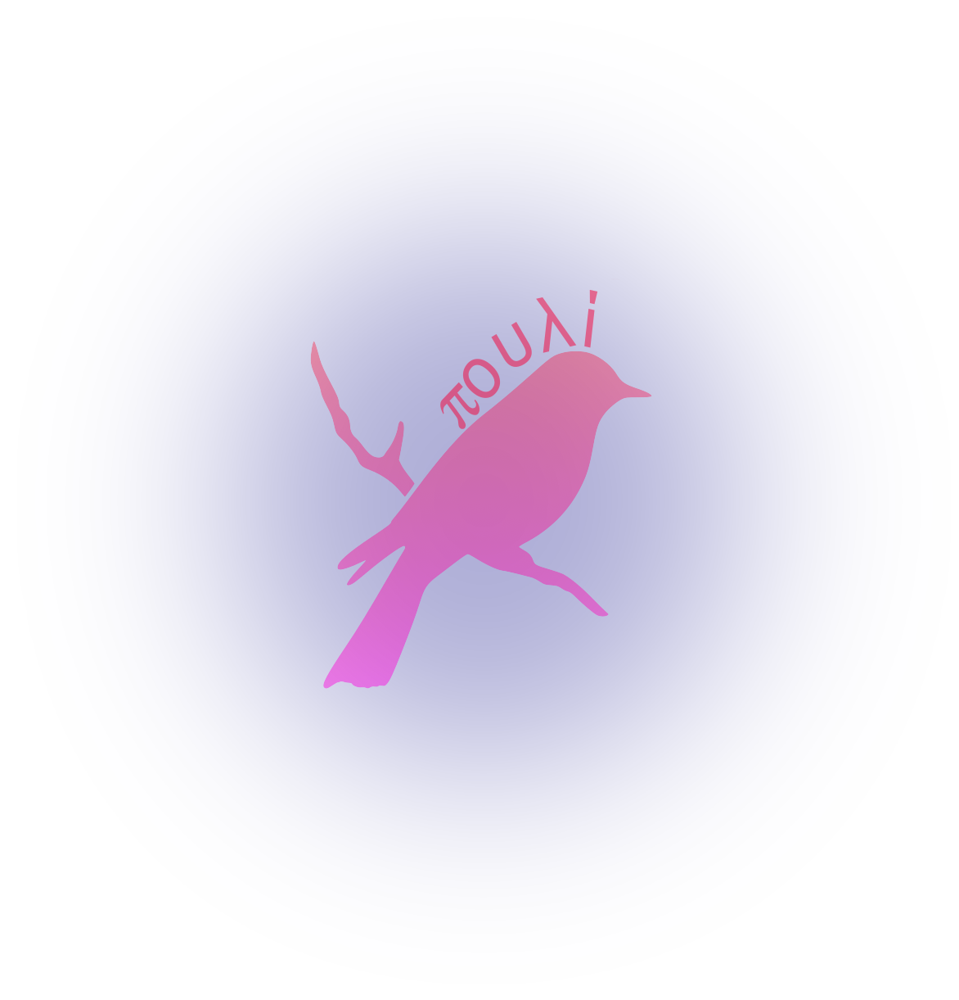

Inkscape

Inkscape je besplatni softverski program za uređivanje vektorske grafike otvorenog koda, objavljen pod GNU General Public License (GPL) 2.0 ili novijom verzijom. Koristi se za umjetničke i tehničke ilustracije poput crtanih filmova, isječaka, logotipa, tipografije i dijagrama.
Koristi vektorsku grafiku kako bi omogućio oštre ispise i prikaze u neograničenoj rezoluciji i nije vezan za fiksni broj piksela poput rasterske grafike.
Inkscape može prikazati primitivne vektorske oblike (npr. pravokutnike, elipse, poligone, lukove, spirale, zvijezde i 3D okvire) i tekst. Ovi objekti mogu se ispuniti punim bojama, uzorcima i radijalnim ili linearnim gradijentima boja, a njihovi rubovi mogu se ocrtavati, oboje s podesivom prozirnošću.
Također je podržano ugrađivanje i opcionalno praćenje rasterske grafike, što omogućuje uređivaču stvaranje vektorske grafike iz fotografija i drugih rasterskih izvora. Stvoreni oblici mogu se dalje manipulirati geometrijskim transformacijama, kao što su pomicanje, rotiranje, skaliranje i naginjanje.

Moj projekt
Zadatak je bio da napravimo ili uredimo postojeći logotip i zadovoljavati sljedeće uvjete: barem 3 sloja i primjena isječka ili maske.
Ja sam se odlučila za postojeći logotip ptice. Obojala sam ga isječkom i iznad dodala riječ "πουλί" (poulí) što na Grčkom znači ptica.
